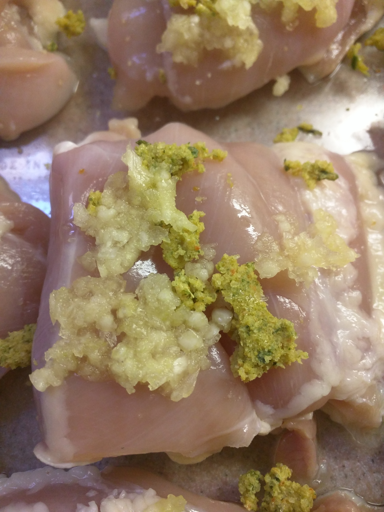

Ingredients
The ingredient list is centered around 3 lbs of chicken which servers 4-5 people.
| Ingredient | Quantity |
|---|---|
| Chicken breast or thigh | 3 lbs |
| Boullion cubes | 2 packs |
| Heavy whipping cream | 2 pints |
| Carrots | 2-3 roots |
| Broccoli | 2 heads |
| Garlic | 1 head |
| Bell Pepper | 1 pepper |
Steps
- Preheat oven to 400F
-
Place chicken into a glass form

-
Sprinkle bouillion and minced garlic on top of each chicken piece

-
Pour heavy whipping cream to nearly submerge chicken pieces
- Place in oven for 20 minutes
-
Cut up your additives

-
Remove dish briefly to add additives. After 20 minutes, the milky surface will have started to brown.
- Place in oven for another 10 minutes.
Serve with rice and enjoy!